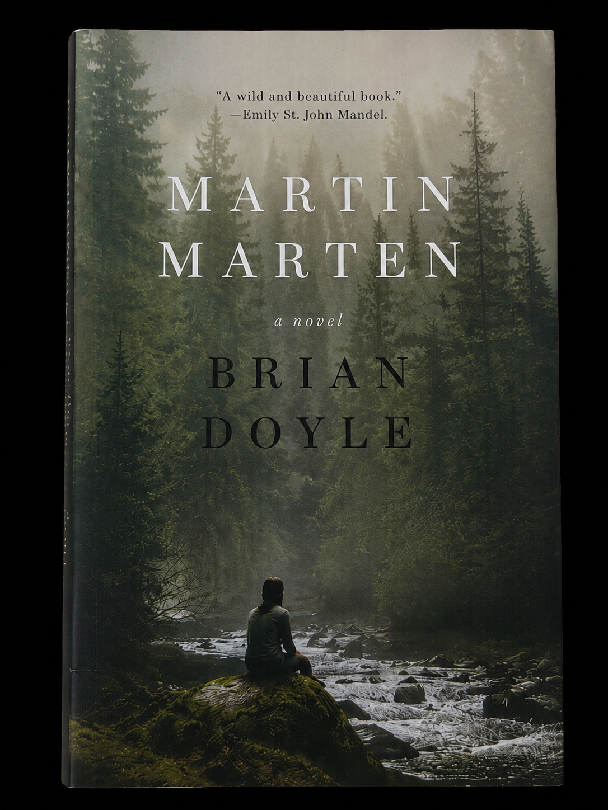
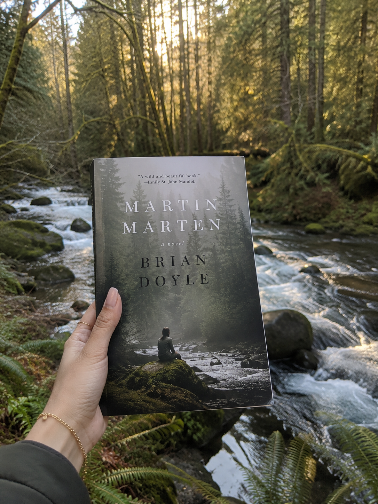

Set in the Oregon Cascades, this novel follows the development of a teenager named Dave and a marten named Martin. Dave lives in a cabin on a mountain he calls Wy’east. He rejects the name Mount Hood. He is entering high school while the animal leaves its mother to find a territory. Their paths cross on forest trails. The book shows the breadth of life and the connections between species. Brian Doyle uses alternating perspectives to present the forest as a community rather than a setting. The plot involves many inhabitants of the mountain including an elk, a bear, and a horse.
Brian Doyle’s Martin Marten functions as a treatise on attention. While critics categorize the work as nature writing, the novel utilizes the landscape to examine how stories shape perception and how humility arises from awareness. For the student of Oregon literature, the text represents a shift from the tradition of individualism toward a model of relationship. Doyle inherits a tradition associated with logging, rivers, and mountains, but he reshapes it through focus and connection. The Cascades do not serve as a stage for conquest or self-reliance. Instead, they are a “lushly textured symposium” of trees, insects, and birds. This symposium includes life forms that exist in a state of constant interaction. The narrative structure reinforces this by alternating between the human world and the world of the mustelid.
The novel utilizes a dual perspective to unsettle thinking. By mirroring the maturation of Dave with the survival of the marten, Doyle avoids anthropomorphism. The marten does not function as a symbol for the boy. The animal perspective reminds readers that the forest contains intelligences that operate independently of human drama. This choice is a gesture in regional literature. It demands that the reader recognize the world as a subject. Both characters are inhabitants of the “full, unknowable breadth and vast sweep of life.” This breadth encompasses the biological realities of the marten, an animal with a “diverse diet and a large territory.” The narrative follows the animal as it ventures from its mother to find a territory, a process that parallels Dave’s entry into high school and the cross-country team.
Doyle situates the work within the geography of the Cascades while challenging the terminology of ownership. Dave rejects the name Hood because it is “what some guy from another country called it.” He chooses the name Wy'east to honor the history of the people who lived there for thousands of years. This distinction is vital for understanding the contribution of the text to the canon. In earlier narratives, the landscape often served as a site for extraction. Doyle replaces this with a network where trees feed fungi and families carry “grief and love through wilderness.” The mountain is a community with specific rhythms and vulnerabilities.
The prose itself resists the impulse toward detachment. Critics note the musicality of the style, which serves an aesthetic project. Doyle suggests that “astonishment is a form of ethical attention.” By using a style that celebrates wonder, the novel resists the commodification of nature. The forest is not scenery for consumption. In an era defined by extraction, this insistence on wonder acts as a stance. The novel provides a framework for belonging that extends beyond nationality. While many narratives focus on who belongs in a nation, this book asks what it means to belong within a shared landscape (Doyle 3). This perspective is relevant to those who learn a region through its rivers, forests, and rain before understanding its history.
Understanding a place requires more than an analysis of human events. It requires an imagination. One must listen to the “lives moving through its forests and rivers.” Dave’s journey is not just about entering adulthood, but about entering a state of reciprocity with the environment. Identity is linked to the “interconnectedness of the world and its many inhabitants.” Humility is the byproduct of paying attention to these “intertwined journeys.” The narrative includes the stories of an elk, a bear, and a horse. Each story is deep and avoids the trap of being a backdrop. These lives intersect on the trails of Wy’east, creating a record of existence.
Doyle expands the definition of Oregon literature by moving away from the hero. The spirit of place is not found in the solitude of the peak, but in the intersections of the trail. The maturation of the boy and the marten occurs through movement and observation. As the marten discovers the females of his species, Dave experiences changes in his own social circle. These developments emphasize that humans are animals within a system. The health of the community depends on the ability of the individual to notice the world. This focus on attention transforms the landscape into a participant. The interaction between the human runner and the animal navigator provides a map of the mountain that is based on movement rather than maps. The dimension of the novel rests on the refusal of cynicism.
The novel also addresses the concept of limits. Both Dave and Martin must learn the boundaries of their respective worlds. For the marten, these boundaries are defined by scent, territory, and the presence of predators. For Dave, the boundaries are social and physical, marked by the start of high school and the endurance required for cross-country running. These boundaries are not barriers but points of contact. Doyle suggests that the awareness of limits is essential for humility. To know where one ends and another life begins is the foundation of respect. This respect is what allows for the “lushly textured symposium” to function.
In conclusion, Martin Marten is a work that demands a new way of seeing. It rejects the impulse to name and own. It replaces individualism with relationship. The journeys of Dave and Martin serve as a map for a different kind of identity. This identity is rooted in the dirt, the undergrowth, and the rhythms of nonhuman lives. The novel argues that adulthood involves the recognition of one's place within the sweep of life. This recognition is only possible through sustained attention to the world. By the end of the narrative, the mountain is no longer a destination but a home defined by the presence of others. The reader is left with a sense of the “unknowable breadth” of the world and the responsibility to notice it.
Brian Doyle (1956–2017) was an acclaimed Oregon writer, essayist, and longtime editor of Portland Magazine at the University of Portland. Rooted in the Pacific Northwest, Doyle drew inspiration from Oregon’s landscapes, communities, and ecosystems, creating works that celebrate the interconnectedness of human and nonhuman life. His writing is renowned for its lyrical, exuberant style, blending humor, wonder, and careful observation of the natural world. Among his most notable works are Mink River (2010), set in a fictional Oregon coastal town, and Martin Marten (2015).
Brian Doyle, Mink River (2010)
- A novel set in a fictional Oregon coastal town, rich with ecological and communal themes.
Barry Lopez, Arctic Dreams (1986)
- A landmark work of environmental literature examining human relationships with landscape.
Robin Wall Kimmerer, Braiding Sweetgrass (2013)
- Essays blending ecology, Indigenous knowledge, and reciprocity with the natural world.
Ursula K. Le Guin, Buffalo Gals, and Other Animal Presences (1987)
- Stories exploring human and animal worlds through myth and imagination.

